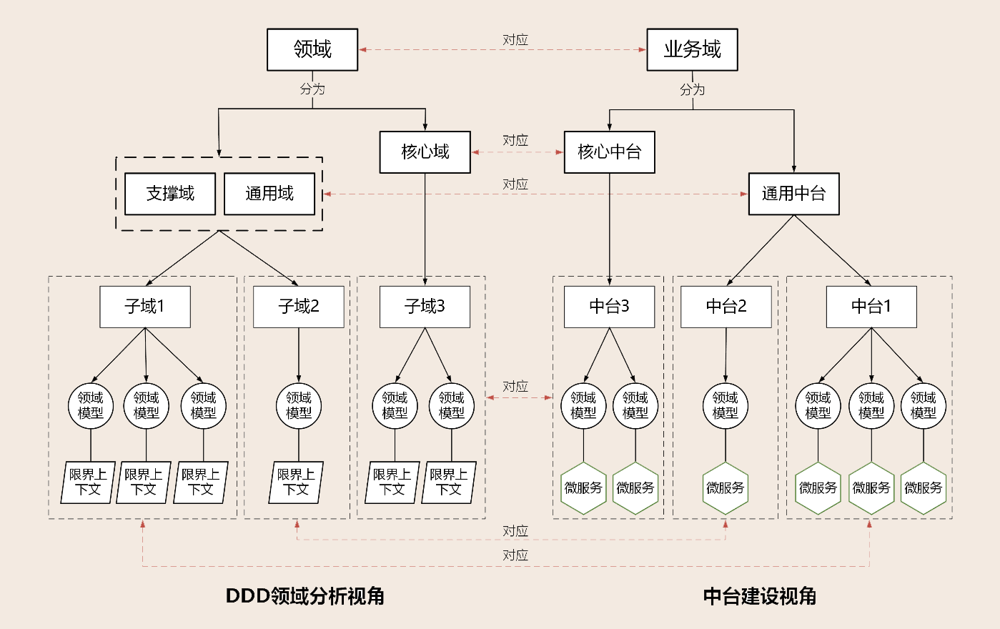
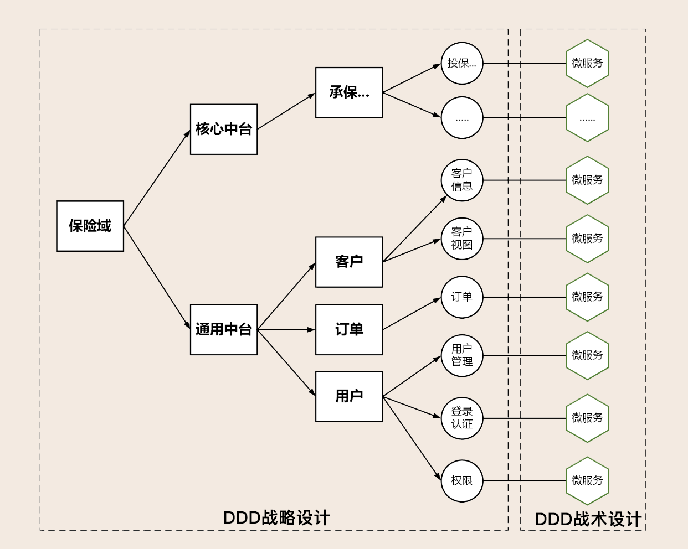

- 00 开篇词 学好了DDD，你能做什么？.md.html
- 01 领域驱动设计：微服务设计为什么要选择DDD.md.html
- 02 领域、子域、核心域、通用域和支撑域：傻傻分不清？.md.html
- 03 限界上下文：定义领域边界的利器.md.html
- 04 实体和值对象：从领域模型的基础单元看系统设计.md.html
- 05 聚合和聚合根：怎样设计聚合？.md.html
- 06 领域事件：解耦微服务的关键.md.html
- 07 DDD分层架构：有效降低层与层之间的依赖.md.html
- 08 微服务架构模型：几种常见模型的对比和分析.md.html
- 09 中台：数字转型后到底应该共享什么？.md.html
- 10 DDD、中台和微服务：它们是如何协作的？.md.html
- 11 DDD实践：如何用DDD重构中台业务模型？.md.html
- 12 领域建模：如何用事件风暴构建领域模型？.md.html
- 13 代码模型（上）：如何使用DDD设计微服务代码模型？.md.html
- 14 代码模型（下）：如何保证领域模型与代码模型的一致性？.md.html
- 15 边界：微服务的各种边界在架构演进中的作用？.md.html
- 16 视图：如何实现服务和数据在微服务各层的协作？.md.html
- 17 从后端到前端：微服务后，前端如何设计？.md.html
- 18 知识点串讲：基于DDD的微服务设计实例.md.html
- 19 总结（一）：微服务设计和拆分要坚持哪些原则？.md.html
- 20 总结（二）：分布式架构关键设计10问.md.html
- 答疑：有关3个典型问题的讲解.md.html
- 结束语 所谓高手，就是跨过坑和大海.md.html
- 捐赠
10 DDD、中台和微服务：它们是如何协作的？
你好，我是欧创新。今天我一起来聊聊 DDD、中台和微服务的关系。
DDD 和微服务来源于西方，而中台诞生于中国的阿里巴巴。DDD 在二十多年前提出后一直默默前行，中台和微服务的理念近几年才出现，提出后就非常火爆。这三者看似风马牛不相及，实则缘分匪浅。中台是抽象出来的业务模型，微服务是业务模型的系统实现，DDD 作为方法论可以同时指导中台业务建模和微服务建设，三者相辅相成，完美结合。
你可能会问：凭什么 DDD 可以指导中台和微服务建设，究竟起到了什么作用呢？
DDD 有两把利器，那就是它的战略设计和战术设计方法。
中台在企业架构上更多偏向业务模型，形成中台的过程实际上也是业务领域不断细分的过程。在这个过程中我们会将同类通用的业务能力进行聚合和业务重构，再根据限界上下文和业务内聚的原则建立领域模型。而 DDD 的战略设计最擅长的就是领域建模。
那在中台完成领域建模后，我们就需要通过微服务来完成系统建设。此时，DDD 的战术设计又恰好可以与微服务的设计完美结合。可以说，中台和微服务正是 DDD 实战的最佳场景。
DDD 的本质
我们先简单回顾一下 DDD 领域、子域、核心域、通用域和支撑域等概念，后面会用到。
在研究和解决业务问题时，DDD 会按照一定的规则将业务领域进行细分，领域细分到一定的程度后，DDD 会将问题范围限定在特定的边界内，并在这个边界内建立领域模型，进而用代码实现该领域模型，解决相应的业务问题。领域可分解为子域，子域可继续分为子子域，一直到你认为适合建立领域模型为止。
子域还会根据自身重要性和功能属性划分为三类子域，它们分别是核心域、支撑域和通用域。关于这三类子域更为详细的讲解，你可以回看[第 02 讲]。

接下来我们一起看下上面这张图，我选择了保险的几个重要领域，进行了高阶的领域划分。当然每个企业的领域定位和职责会有些不一样，那在核心域的划分上肯定会有一定差异。因此，当你去做领域划分的时候，请务必结合企业战略，这恰恰也体现了 DDD 领域建模的重要性。
通过领域划分和进一步的子域划分，我们就可以区分不同子域在企业内的功能属性和重要性，进而采取不同的资源投入和建设策略，这在企业 IT 系统的建设过程中十分重要，并且这样的划分还可以帮助企业进行中台设计。
中台的本质
中台来源于阿里的中台战略（详见《企业 IT 架构转型之道：阿里巴巴中台战略思想与架构实战》钟华编著）。2015 年年底，阿里巴巴集团对外宣布全面启动中台战略，构建符合数字时代的更具创新性、灵活性的“大中台、小前台”组织机制和业务机制，即作为前台的一线业务会更敏捷、更快速地适应瞬息万变的市场，而中台将集合整个集团的运营数据能力、产品技术能力，对各前台业务形成强力支撑。
中台的本质其实就是提炼各个业务板块的共同需求，进行业务和系统抽象，形成通用的可复用的业务模型，打造成组件化产品，供前台部门使用。前台要做什么业务，需要什么资源，可以直接找中台，不需要每次都去改动自己的底层。
DDD、中台和微服务的协作模式
我们在 [第 09 讲] 已经说过了传统企业和阿里中台战略的差异，那实际上更多的企业还是会聚焦在传统企业中台建设的模式，也就是将通用能力与核心能力全部中台化，以满足不同渠道核心业务能力的复用，那么接下来我们就还是把重点放在传统企业上。
传统企业可以将需要共享的公共能力进行领域建模，建设可共享的通用中台。除此之外，传统企业还会将核心能力进行领域建模，建设面向不同渠道的可复用的核心中台。
而这里的通用中台和核心中台都属于我们上一讲讲到的业务中台的范畴。
DDD 的子域分为核心域、通用域和支撑域。划分这几个子域的主要目的是为了确定战略资源的投入，一般来说战略投入的重点是核心域，因此后面我们就可以暂时不严格区分支撑域和通用域了。
领域、中台以及微服务虽然属于不同层面的东西，但我们还是可以将他们分解对照，整理出来它们之间的关系。你看下面这张图，我是从 DDD 领域建模和中台建设这两个不同的视角对同一个企业的业务架构进行分析。

如果将企业内整个业务域作为一个问题域的话，企业内的所有业务就是一个领域。在进行领域细分时，从 DDD 视角来看，子域可分为核心域、通用域和支撑域。从中台建设的视角来看，业务域细分后的业务中台，可分为核心中台和通用中台。
从领域功能属性和重要性对照来看，通用中台对应 DDD 的通用域和支撑域，核心中台对应 DDD 的核心域。从领域的功能范围来看，子域与中台是一致的。领域模型所在的限界上下文对应微服务。建立了这个映射关系，我们就可以用 DDD 来进行中台业务建模了。
我们这里还是以保险领域为例。保险域的业务中台分为两类：第一类是提供保险核心业务能力的核心中台（比如营销、承保和理赔等业务）；第二类是支撑核心业务流程完成保险全流程的通用中台（比如订单、支付、客户和用户等）。
这里我要提醒你一下：根据 DDD 首先要建立通用语言的原则，在将 DDD 的方法引入中台设计时，我们要先建立中台和 DDD 的通用语言。这里的子域与中台是一致的，那我们就可以将子域统一为中台。
中台通过事件风暴可以进一步细分，最终完成业务领域建模。中台业务领域的功能不同，限界上下文的数量和大小就会不一样，领域模型也会不一样。
当完成业务建模后，我们就可以采用 DDD 战术设计，设计出聚合、实体、领域事件、领域服务以及应用服务等领域对象，再利用分层架构模型完成微服务的设计。
以上就是 DDD、中台和微服务在应用过程中的协作模式。
中台如何建模？
看完了三者的协作模式，我们就顺着上面的话题，接着来聊聊中台如何建模。
中台业务抽象的过程就是业务建模的过程，对应 DDD 的战略设计。系统抽象的过程就是微服务的建设过程，对应 DDD 的战术设计。下面我们就结合 DDD 领域建模的方法，讲一下中台业务建模的过程。
第一步：按照业务流程（通常适用于核心域）或者功能属性、集合（通常适用于通用域或支撑域），将业务域细分为多个中台，再根据功能属性或重要性归类到核心中台或通用中台。核心中台设计时要考虑核心竞争力，通用中台要站在企业高度考虑共享和复用能力。
第二步：选取中台，根据用例、业务场景或用户旅程完成事件风暴，找出实体、聚合和限界上下文。依次进行领域分解，建立领域模型。
由于不同中台独立建模，某些领域对象或功能可能会重复出现在其它领域模型中，也有可能本该是同一个聚合的领域对象或功能，却分散在其它的中台里，这样会导致领域模型不完整或者业务不内聚。这里先不要着急，这一步我们只需要初步确定主领域模型就可以了，在第三步中我们还会提炼并重组这些领域对象。
第三步：以主领域模型为基础，扫描其它中台领域模型，检查并确定是否存在重复或者需要重组的领域对象、功能，提炼并重构主领域模型，完成最终的领域模型设计。
第四步：选择其它主领域模型重复第三步，直到所有主领域模型完成比对和重构。
第五步：基于领域模型完成微服务设计，完成系统落地。

结合上面这张图，你可以大致了解到 DDD 中台设计的过程。DDD 战略设计包括上述的第一步到第四步，主要为：业务域分解为中台，对中台归类，完成领域建模，建立中台业务模型。DDD 战术设计是第五步，领域模型映射为微服务，完成中台建设。

那么如果还是以保险领域为例的话，完成领域建模后，里面的数据我们就可以填上了。这里我选取了通用中台的用户、客户和订单三个中台来做示例。客户中台提炼出了两个领域模型：客户信息和客户视图模型。用户中台提炼出了三个领域模型：用户管理、登录认证和权限模型。订单中台提炼出了订单模型。
这就是中台建模的全流程，当然看似简单的背后，若是遇上复杂的业务总会出现各种各样的问题，不然应用起来也不会有那么多的困难。如果你在按照以上流程实施的过程中遇到什么问题，欢迎在留言区和我讨论。
总结
今天我们主要讨论了传统企业中台建设的一些思路，梳理了 DDD、中台和微服务的关系。DDD 的战略设计可用于中台业务建模，战术设计可指导中台微服务设计。相信 DDD 与中台的完美结合，可以让你的中台建设如虎添翼！
另外，这一讲只是开一个头，在下一讲中我还会以一个传统核心业务的中台建设案例，详细讲解中台的设计过程。
© 2019 - 2023 Liangliang Lee. Powered by gin and hexo-theme-book.